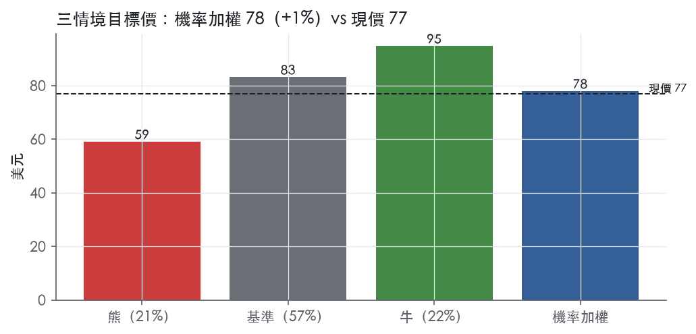
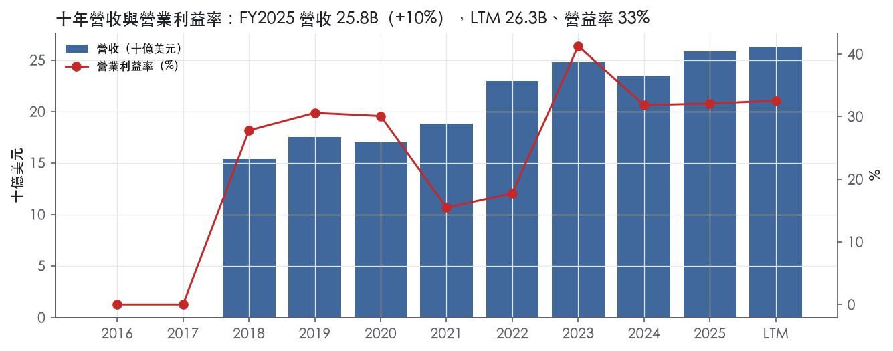
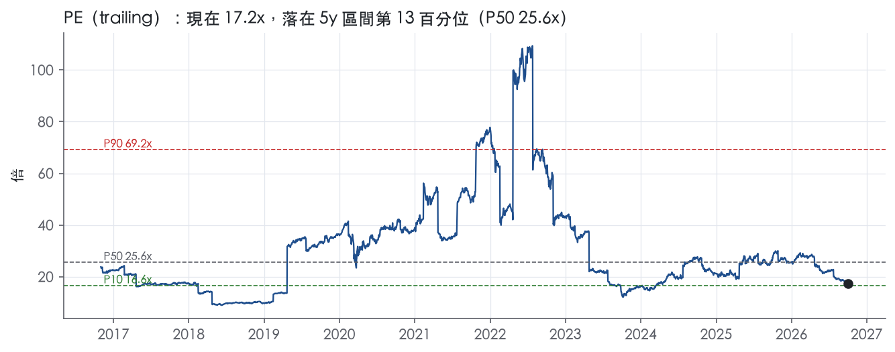
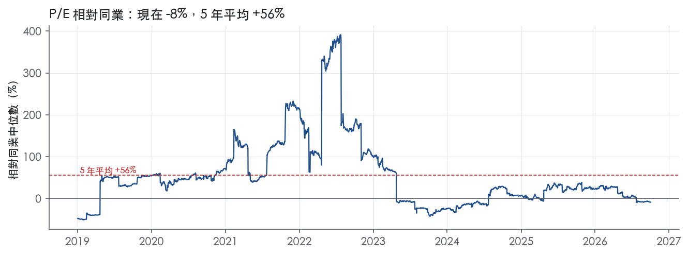
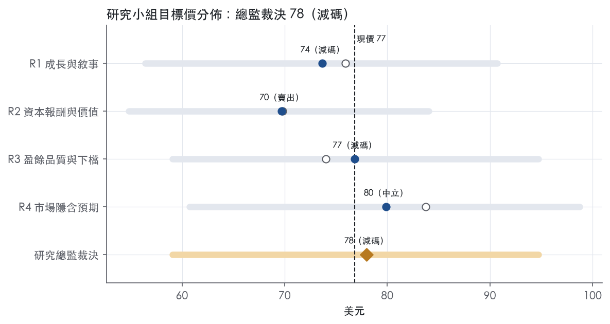
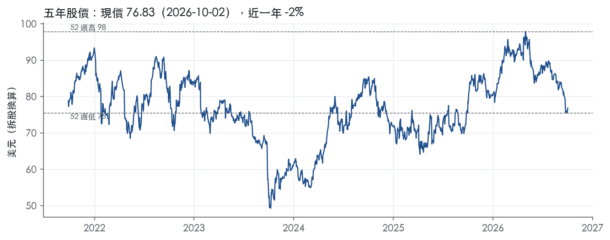

評等總表 › 公用事業 › NEE
市場低估FPL盈餘路徑，倍數持平，中性｜評等 減碼｜目標價 78
| 報告日 | 評等 | 目標價 | 當時股價 | 超額報酬 |
|---|---|---|---|---|
| 2026-10-02 | 減碼 | 77.95 | 76.83 | -5.6% |
| 評等 | 減碼（邊界，鄰近中立） |
| 12 個月目標價 | 78 美元 |
| 現價 | 76.83 美元（2026-10-02） |
| 預期報酬 | 股價 +1.5%＋股息 3.2%＝總報酬 +4.6%；同業籃門檻 10.2%，超額 -5.6% |
| 估值方法 | P/E 20.0x，套在第 5–8 季的EPS（也就是一年後的未來四季） |
| 三情境 | 熊 59／基準 83／牛 95 |
| 研究流程 | 四位研究員兩輪辯論＋研究總監裁決 |
| 資料來源 | SEC EDGAR XBRL、Tiingo、FRED（全免費） |
市場低估FPL盈餘路徑，倍數持平，中性（研究總監裁決，四位研究員兩輪辯論後）
評等 減碼（邊界，鄰近中立）｜12 個月目標價 78 美元（總監三情境機率加權 81 與研究員中位數 75 各半）｜現價 76.83（2026-10-02）
預期報酬：股價 +1.5%＋股息 3.2%＝總報酬 +4.6%。同業籃門檻 10.2%，超額 -5.6%，離中立的分界不到三個百分點，屬邊界評等（落在其他級距的機率約四成）。
估值方法：P/E 20.0x，套在第 5–8 季的EPS（也就是一年後的未來四季）。三情境：熊 59（21%）／基準 83（57%）／牛 95（22%）。
立場中性而評等減碼：評等看的是「預期總報酬 4.6% − 同業籃門檻 10.2%」＝超額 -5.6%，不是絕對漲跌；中性但超額偏離門檻，代表情境機率或股利把報酬推離門檻。
什麼會讓研究總監改變看法：Q3 財報 FPL 監管資本年增低於 8.5% 或積壓量因 IRS 期限剔除風光專案，撤回營收與營益率上修、轉偏空；維州無重大讓步核准加上大型負載交易落地，倍數往前瞻帶 P25 21.4x 靠、轉偏多。
| 過去四季（實際，FY2026Q2） | 未來四季 | 第 5–8 季 | 第 9–12 季 | |
|---|---|---|---|---|
| 營收（B） | 26.3B | 28.3B | 30.4B | 32.5B |
| 營收成長 | 7.8% | 7.5% | 7.5% | 7.0% |
| 營業利益率 | 32.5% | 33.0% | 33.0% | 33.0% |
| EPS（美元） | 4.46 | 3.95 | 4.16 | 4.36 |
| EPS 成長 | 55.8% | -11.5% | 5.4% | 4.9% |
| 每股股息（美元） | 2.38 | 2.38 | 2.38 | 2.38 |
| P/E（現價） | 17.2x | 19.5x | 18.5x | 17.6x |
| 股息殖利率（現價） | 3.2% | 3.1% | 3.1% | 3.1% |
過去四季為申報數字；預測為研究總監的假設、程式計算。倍數與殖利率都用現價計算，用來看現價對應各期獲利的高低。
| 情境 | 機率（歷史） | 故事 | 未來四季營收成長 | 第 5–8 季營益率 | 倍數 | 目標價 | 股價漲跌 |
|---|---|---|---|---|---|---|---|
| 熊 | 21%（18%） | 風險表第 1 條維州受阻或附重大讓步打倍數、第 4 條槓桿 6.69x 逼出增發打股數、第 2 條 FPSC 重審侵蝕利潤率，NEE 以受管制同業底部定價 | 6.0% | 31.0% | 16.0x | 59 | -23.1% |
| 基準 | 57%（54%） | 獨立 NEE 在新費率協議下 FPL 淨利持續年增約 10%，EPS 高於機械基準但低於 8%+ 路徑（稀釋 2%），倍數相對市場持平略升 | 7.5% | 33.0% | 20.0x | 83 | 8.3% |
| 牛 | 22%（27%） | 年底前 FPL 大型負載交易落地、2027 年 1 月維州 SCC 無重大讓步核准、Q3 積壓量無剔除，倍數回到前瞻帶 P25 上方 | 7.5% | 34.0% | 22.0x | 95 | 23.3% |
目標價由程式依研究總監的驅動與倍數計算；機率由研究總監給定。括號內是歷史頻率：把這檔股票過去十年 12 個月報酬的波動形狀，置中在基準情境，結果落在各情境附近的比例。

四位研究員用不同方法各自估值，回應研究總監的質疑後交出第二輪，最後由總監逐點裁決。各研究員的主張見第七章，裁決理由見第八章，完整論證見《研究底稿》。
| 立場（一輪→二輪） | 加權目標價（一輪→二輪） | 評等（一輪→二輪） | 第二輪倍數 | 熊～牛目標價 | |
|---|---|---|---|---|---|
| R1 成長與敘事 | 中性→看空 | 76→74 | 減碼→減碼 | 19.0x | 56～91 |
| R2 資本報酬與價值 | 看空→看空 | 70→70 | 賣出→賣出 | 18.1x | 55～84 |
| R3 盈餘品質與下檔 | 中性→中性 | 74→77 | 減碼→減碼 | 19.0x | 59～95 |
| R4 市場隱含預期 | 看多→中性 | 84→80 | 中立→中立 | 20.5x | 61～99 |
| 研究總監裁決 | 中性 | 78 | 減碼 | 20.0x | 59～95 |
目標價由程式依各自的驅動與倍數計算；評等＝機率加權總報酬 − 同業籃門檻。
NextEra Energy 是美國最大的電力與能源基礎建設公司，由受監管公用事業 FPL 與非監管開發商 NextEra Energy Resources（NEER）兩大引擎組成。NEE 是北美最大的電力與能源基礎設施公司，也是美國家庭與企業電力的主要供應商之一¹。NEE 總部位於佛州 Juno Beach，旗下 FPL 是美國最大電力公用事業，為佛州約1,200萬人提供穩定電力服務¹；FPL 為超過六百萬個客戶帳戶提供服務²。NEE 也擁有美國最大的能源基礎設施開發商 NextEra Energy Resources, LLC¹。公司業務組合涵蓋天然氣、核能、再生能源與電池儲能等多元能源形式，以滿足美國持續成長的用電需求¹。FY2025 LTM 營收 26.30B，對應股價 76.83 美元換算市值 160.25B。
公司依兩大主要業務驅動其營運表現：FPL 提供受監管的零售電力服務，NEER 連同關係企業是美國最大能源基礎建設開發商之一²。FY2025 分部淨利：FPL 5,012M、NEER 2,975M、Corporate and Other -1,152M，合計 NEE 淨利 6,835M²。FPL 營收主要來自以 FPSC 核定費率向零售客戶售電，透過基本費率與成本回收條款機制收取²。NEER 擁有、開發、建造、管理並營運美國與加拿大批發能源市場中多元化的發電與電池儲能資產組合，並包含對其他潔淨能源業務的資產與投資；NEER 也擁有、開發、建造並營運受監管的電力與天然氣輸送資產，另提供完整能源與容量需求服務、能源相關商品行銷交易，並參與天然氣、天然氣液與原油生產²。FY2025 NEER 新增約1,604 MW風力發電、2,859 MW太陽能發電、1,799 MW電池儲能容量，並擴大其合約開發專案的積壓量²。資本支出結構上，FY2025 FPL 資本投資總額 8,935M（主要為輸配電 4,498M、新增發電 2,915M），NEER 總額 15,669M（太陽能含儲能 6,975M、風力 3,325M、其他潔淨能源 3,295M）²。兩分部營收各自占比 10-K 未直接揭露合併營收口徑下的百分比，僅能從淨利結構推斷 FPL 與 NEER 為並重的雙核心。
FPL 是純佛州零售電力供應商，服務對象是住宅與商業用戶，通路即其受監管電網。FY2025 零售基本費率收入增加約222M，主要反映平均客戶帳戶數成長1.7%及透過太陽能基本費率調整機制取得新費率，部分被平均用戶用電量下降約1.2%（天氣因素）抵銷²。FPL 持續顯示其能在服務全美成長最快州之一、全球第14大經濟體的同時，維持客戶可負擔性與可靠性，目前 FPL 典型住宅電費較全國平均低約30%，且預計到十年末平均每年僅上漲2%¹。FPL 正見到來自超大規模資料中心（hyperscaler）及其他大型用戶的強烈興趣，看重速度、可靠性與具競爭力的電價，FPL 擁有約21 GW 的大型負載意向，其中12 GW 已進入深度洽談，部分最快可望於2028年開始供電¹。NEER 則面向美國與加拿大批發市場及企業客戶（含資料中心電力中心策略），通路為長約 PPA 與開發承攬。
FY2025Q3 營收 7.40B、年增10.4%（is.revenue 對應季度資料包），獲利表現穩健【判，依資料包】。FY2025Q4 營收 6.10B、年增15.1%，EPS 0.74（資料包）。FY2026Q1：NEE 公布 GAAP 淨利 2.182B，每股1.04美元，較去年同期833M、每股0.40美元大幅成長；調整後每股盈餘1.09美元，年增10%³。FPL 第一季淨利1.462B，每股0.70美元，資本支出約3.2B，全年資本投資指引為12B至13B，監管資本運用基礎較去年同期成長約8.8%³。NEER 第一季創下新再生能源與儲能簽約紀錄，新增4 GW 至積壓量，其中電池儲能簽約1.3 GW，使積壓量總計約33 GW³。FY2026Q2：NEE GAAP 淨利3.144B，每股1.50美元，較去年同期2.028B、每股0.98美元成長；調整後每股盈餘1.15美元，年增9.5%¹。FPL 第二季淨利1.412B，每股0.67美元，資本支出約2.8B，監管資本運用成長約9.3%，並新增逾9萬名客戶¹。NEER 第二季新增3.6 GW 積壓量（其中電池儲能2 GW），總積壓量達約35.1 GW¹。公司於7月表示將繼續預期2026年調整後每股盈餘介於3.92至4.02美元，並以區間高端為目標¹。
公司預期2026年調整後每股盈餘將落在3.92至4.02美元區間，並以高端為目標，同時持續預期調整後每股盈餘將以每年8%以上的複合成長率成長至2032年，並以同樣目標延伸至2035年，均以2025年基期3.71美元為基礎¹。公司也持續預期每年股利將以約10%的速度成長至2026年（以2024年為基期），並於2026年底至2028年間以每年6%的速度成長¹。執行長 John Ketchum 表示，隨著用電需求持續加速，NextEra Energy 具備規模、財務實力、供應鏈、開發專業與技術，能夠興建各種形式的能源¹。公司正推進與 Dominion Energy 的合併案，已向州與聯邦機構提交合併核准申請，若核准完成，Dominion Energy 客戶將獲得2.25B美元的股東資助帳單抵免，合併後公司預期支持監管資本運用至2032年約11%的年成長，以及至2032年9%以上的調整後每股盈餘成長，並以2035年9%以上為目標¹。NEER 的資料中心電力樞紐策略是另一成長引擎：公司去年獲美國商務部選定建造9.5 GW新燃氣發電，服務德州與賓州的大型負載，此案與美日間5,500億美元投資承諾相關，目前既有逾30個資料中心電力樞紐，年底目標達約40個³。整體看，雙引擎模式（FPL 受監管資本基礎成長＋NEER 長約再生能源與儲能開發）是公司成長的核心敘事，Dominion 合併案若過關將顯著擴大受監管資產規模與地理覆蓋。資料中心／大型負載需求是近兩年新增的結構性成長動能，FPL 的21 GW 意向與12 GW 深度洽談顯示潛在訂單能見度高於過去週期。風險在於合併案尚待州與聯邦多重審批，加上淨負債已達103.07B、FY2025 FCF 為負11.38B（FCF.FY2025），資本開支強度仍是觀察重點。

NEE 的護城河評為「窄」，而且只來自 FPL 這個在佛州受監管的特許售電業務；NEER 的批發發電與開發業務看不到可辨識的護城河。
FPL 的監管框架剛完成新一輪費率核定，未來 5 年以上的報酬基礎可以預見，但數字顯示集團資本報酬從未穩定越過資本成本門檻，所以不給「寬」。
趨勢評為穩定：ROIC 十年來沒有趨勢性的改善，也沒有趨勢性的惡化，FPL 的特許地位沒有出現結構性威脅。
FPL 的優勢屬於「效率規模」，佛州零售電力市場是區域獨占，第二家業者進來重建電網不具經濟性。
FPL 為佛州超過六百萬個客戶帳戶供電，是美國最大的電力公用事業²。
FPL 的營收主要來自向零售客戶售電，電價由 FPSC 透過基本費率與成本回收條款機制核定²。
燃料與其他成本回收條款、特許費、營收稅與風災附加費等收入，大部分是成本轉嫁²。
這種成本轉嫁設計把燃料與風災風險移給用戶，FPL 承擔的是資本基礎的報酬，而不是商品價格風險。
FPL 也擁有「無形資產（監管授權）」：部分輸電線路所在土地取得了政府機關的必要同意或私人地主的權利，這是新進者難以複製的路權資產²。
FPL 在 2025 年完成約 1.2B 美元的風災臨時附加費回收，可回收金額仍須經 FPSC 審慎性審查²。
監管機關願意讓 FPL 向用戶回收重大風災成本，說明這張授權是實質保護，不只是名義上的許可。
轉換成本、網路效應、成本優勢三類在本次取得的原文中沒有足夠證據，不列入。
量化底稿不支持寬護城河，連窄護城河也只能有條件地成立。
ROIC 十年平均 5.9%、最新 6.0%，資本成本代理值為 10.2%，平均差距為 -4.3%，有資料的 9 年中沒有任何一年高於代理值。
ROIC 的標準差只有 1.8%，最低 3.0%、最高 9.1%，報酬穩定但水準偏低，符合受監管業務「報酬被核定上限壓住」的特徵。
我們仍然給「窄」而不是「無」，理由有兩點。
第一，代理值是在 10 年債殖利率上一律加 5%，等於把全部資本都當成權益來計價，會高估以債務為主要融資來源的公用事業的實際資本成本。
NEE 的信評為 Moody's Baa1、S&P A-、Fitch A-，FPL 的公司信評為 A1／A／A²。
第二，以權益角度檢驗，ROE 十年平均 13.9%，高於 10.2% 的代理值；但 ROE 最低曾到 7.9%，所以並非每一年都過關。
FPL 在 2025 與 2024 年的監管認定 ROE 分別約為 11.70% 與 11.40%²。
營業利益率十年平均 28.4%，但標準差達 7.7%，區間在 15.5% 到 41.3%，波動偏大。
這個波動大部分來自 NEER 與集團層級的非合格避險按市價評價，不是 FPL 本業的獲利能力在變動。
非合格避險的公允價值變動直接計入損益，造成盈餘波動，原因是部位的經濟對沖項目通常不按市價評價²。
FCF 利潤率十年平均 -39.4%，說明護城河帶來的是會計報酬，資本密集度讓股東在中期內拿不到自由現金流。
最大的侵蝕風險是監管關係，FPL 的報酬完全取決於 FPSC 怎麼核定。
2026 年 1 月，FPSC 核准 FPL 2025 年基本費率案的和解協議；2026 年 2 月，部分參與方聯合提出重新審議動議，挑戰這項最終裁定²。
第二個風險是可負擔性：佛州風災頻繁，附加費一再加到用戶帳單上，會提高未來監管機關壓低核定 ROE 的政治壓力。
第三個風險是融資成本：NEER 2025 年利息費用增加 569M 美元²。
10 年債殖利率目前為 5.24，淨負債為 103.07B，在核定報酬調整落後的情況下，利率走高會直接壓縮超額報酬。
NEER 那一側本來就沒有護城河，政策變化還會放大這個弱點。
OBBBA 已修改潔淨能源稅額抵減相關稅法，聯邦對風電與太陽能許可的審查也還在進行中²。
公司表示，目前預計在 2030 年前併網的風電與太陽能專案可以取得潔淨能源稅額抵減²。
2025 年 NEER 認列約 0.7B 美元的 XPLR 投資減損²。
目標倍數相對受監管電力同業應該「持平」，不給溢價；FPL 的窄護城河只足以支撐同業水準的倍數，而 NEER 的 ROIC 沒有越過資本成本，不構成溢價的理由。
建議估值研究員用分部加總：FPL 比照受監管同業並允許 5 年以上的穩定期，NEER 按無護城河的開發商計價，不外推超額報酬期。
目前 P/E 為 17.2x，落在 5 年分位的 13.4%，回升到 5 年中位數 25.6x 的前提是 ROIC 改善，而不是護城河本身。
| 指標 | 最新 | 十年平均 | 標準差 | 最低 | 最高 |
|---|---|---|---|---|---|
| ROIC | 6.0% | 5.9% | 1.8% | 3.0% | 9.1% |
| 營業利益率 | 32.1% | 28.4% | 7.7% | 15.5% | 41.3% |
| FCF 利潤率 | -44.1% | -39.4% | 7.0% | -49.1% | -28.3% |
| ROE | 13.1% | 13.9% | 4.5% | 7.9% | 21.3% |
程式計算。資本成本代理值（10 年債＋5%）：10.2%；ROIC 平均減資本成本：-4.3%；ROIC 有資料的 9 年中，高於資本成本 0 年。
營業現金流／淨利 LTM 1.48x、近三年均值 1.76x、十年均值 1.87x，三個燈號都是綠燈，代表 CFO 長期穩定覆蓋淨利，這是公用事業＋受監管資產折舊大、應計比率天然偏負值的結果。應計比率 LTM -2.0%、近三年 -2.9%、十年 -2.6%，全部落在綠燈區，顯示淨利沒有靠應收帳款或存貨堆出來，盈餘的「現金含量」是實的。但自由現金流／淨利是全表最刺眼的紅燈：LTM -1.68x、近三年均值 -1.54x、十年均值 -1.45x，過去十年 FCF 從 FY2016 -1.68B 一路惡化到 FY2025 -11.38B（資料包年度表），而且是結構性、不是單一年度波動——NEE 這十年資本支出／營收常年在 70–95%（資料包年度表），FY2024 94.7%、FY2025 92.5%，這是公司主動選擇的高資本支出成長模式，不是盈餘品質出問題，但代表淨利不能直接類比成可分配現金。
FY2026Q2 GAAP 淨利 3.144B、每股 1.50，調整後（Adjusted）淨利 2.407B、每股 1.15，GAAP 反而比 Adjusted 高出 0.737B、每股高 0.35¹。對比去年同期 GAAP 2.028B／每股 0.98，Adjusted 2.164B／每股 1.05，GAAP 當期比 Adjusted 低¹。公司定義的調整項排除：non-qualifying hedges 的效益、XPLR Infrastructure, LP 的淨投資利得、核電除役基金持有權益證券的未實現利益與虧損變動及 OTTI、以及併購相關費用¹。這代表本季 GAAP 數字被避險的未實現公允價值變動與（可能的）核電基金市值波動方向性地墊高，屬於非經常性、非現金的會計項目，我認為應以 Adjusted EPS 1.15 為基礎看核心獲利趨勢，GAAP 1.50 不能直接外推。公司全年 Adjusted EPS guidance 3.92–4.02、2025 基數 3.71，目標 CAGR 8%+ 到 2032 年¹，這是管理層自訂的評估基準，分析師模型應跟隨 Adjusted 口徑但要清楚知道差距來源是避險會計與投資組合市值波動，不是現金成本。
槓桿是這張計分表唯一真正要關注的結構性風險：淨負債／EBITDA LTM 6.69x、近三年均值 5.60x、十年均值 5.33x，全部是紅燈，且 LTM 數字比近三年、十年均值都更差，顯示槓桿仍在惡化而非收斂。淨負債從 FY2016 的 29.28B 一路攀升到 FY2025 的 92.20B、再到最新快照 103.07B（資料包年度表、快照），同期總債務從 FY2024Q3 77.63B 升到 FY2026Q2 105.94B（資料包季表）；資本支出在同一期間持續吃掉 90%+ 的營收，槓桿上升是公司用舉債支應受監管＋長約合約型資產擴張的策略結果，和 FPL 新四年費率協議（2026–2029 年授權 ROE 10.95%、範圍 9.95%–11.95%）相符²，不是獲利能力惡化導致的被動槓桿上升。股東回饋（股利＋回購）／淨利 LTM 53.2%、近三年 60.4%、十年 62.6% 都是綠燈，公司持續配息但沒有用誇張比例舉債回饋股東，回饋政策與現金流狀況大致匹配。稀釋股數年變動 LTM 0.0%、近三年 1.5%、十年 1.2%，黃燈，代表公司仍有溫和股權稀釋（成長型資本支出常靠發股融資），但幅度不大，不構成侵蝕 EPS 的主要因子。
自由現金流／淨利紅燈（LTM -1.68x，近三年均值 -1.54x）：真實但屬公司商業模式本質、非盈餘品質瑕疵——NEE 是資本密集的受監管電力＋長約可再生能源開發商，FY2025 資本支出／營收 92.5%、FY2024 94.7%（資料包年度表），加上 FPL 全年資本投資指引 12B 至 13B¹，FCF 為負是成長階段的常態，只要 CFO／淨利持續 >1x（本表確認綠燈），這條紅燈不代表盈餘造假或現金被掏空，但確實代表淨利不能當成自由現金流的代理指標，估值不能直接拿 P/E 套用在一個 FCF 殖利率 -9.8% 的公司上（快照）。
淨負債／EBITDA 紅燈（LTM 6.69x，近三年均值 5.60x）：真實且在惡化的風險，但有可解釋的結構性原因——受監管資產（FPL rate base 以 59.6% 權益比率運作²）天然能承受比一般工業公司更高的負債／EBITDA 倍數，因為現金流受費率保障、波動性低；但 6.69x 已經明顯高於近三年與十年均值，加上 NEE 正在推進與 Dominion Energy 的合併案，將進一步擴大資本需求與整合負債¹，這條紅燈我認為「可解釋但不可忽視」，槓桿持續墊高會限制未來評等與融資彈性。
淨利率 FY2018→FY2019 跳動 -22pp：10-K 原文節錄未提供該年度損益細項或一次性項目揭露，無法在本次節錄中找到具體原文解釋這段跳動的成因，需要調閱 FY2019 10-K 的 Item 7 損益細項或所得稅/避險項目附註才能判定是否為一次性。在缺乏原文佐證下，不排除與當年非合格避險的公允價值重估或所得稅項目一次性波動有關，但本報告不作無根據推測，列為待查項目。
淨利率 FY2022→FY2023 跳動 +11pp：同樣地，提供的 10-K Item 7 節錄未涵蓋該年度具體損益驅動因子的段落，無法在本次材料中找到原文對應解釋，列為待查項目，建議估值研究員向我方要求 FY2023 10-K 損益表附註或 MD&A 具體段落以排除一次性稅務或避險收益的影響。
應收帳款成長－營收成長 FY2025 +10.7pp 黃燈：量化底稿顯示應收帳款成長快於營收成長逾 10 個百分點，但本次 10-K 節錄未包含營運資金或應收帳款帳齡的具體段落，無法原文佐證是否與 FPL 新費率協議下的 true-up 應收機制有關——FPL 的燃料及其他成本回收條款本質上就會產生逐年調整的應收／遞延項目²，我傾向判斷這是受監管公用事業成本回收機制（clause true-up）造成的會計性波動而非營運資金惡化，但缺乏逐項金額佐證，列為中度可解釋。
估值應以 Adjusted EPS（guidance 3.92–4.02，2025 基數 3.71¹）為核心獲利基準，但要在模型備註中明確標示 GAAP 與 Adjusted 的差距來源是避險公允價值與核電基金市值波動，不是現金成本，不需要額外打折盈餘品質，因為 CFO／淨利與應計比率兩項核心指標都是綠燈。FCF 持續為負不代表盈餘造假，但估值方法應以 EV/EBITDA（現價 17.1x，5年分位 32.5%）或對受監管資產適用的 DDM／RAB 估值為主，避免用 FCF 殖利率（現為 -9.8%）或簡單 P/E 類比一般工業股。淨負債／EBITDA 6.69x 且持續上升，加上 Dominion 合併案仍在審批、可能進一步擴大資本需求，這會限制可接受的 EV/EBITDA 倍數上緣，估值研究員在給倍數區間時應靠近歷史中位數或以下（10年 P50 17.8x），不宜給上緣倍數，直到槓桿軌跡出現收斂訊號。
| 項目 | LTM | 近三年 | 十年 | 燈號 | 規則 |
|---|---|---|---|---|---|
| 營業現金流／淨利 | 1.48x | 1.76x | 1.87x | 綠 | ≥1.00x 綠、<0.80x 紅 |
| 自由現金流／淨利 | -1.68x | -1.54x | -1.45x | 紅 | ≥0.90x 綠、<0.60x 紅 |
| 應計比率（(淨利−CFO)／平均總資產） | -2.0% | -2.9% | -2.6% | 綠 | ≤0.0% 綠、>5.0% 紅 |
| SBC／營收 | — | 0.6% | 0.6% | 綠 | ≤3.0% 綠、>8.0% 紅 |
| 淨負債／EBITDA | 6.69x | 5.60x | 5.33x | 紅 | ≤1.50x 綠、>3.00x 紅 |
| 利息保障倍數（營業利益／利息） | — | — | — | — | ≥8.00x 綠、<3.00x 紅 |
| 稀釋股數年變動 | 0.0% | 1.5% | 1.2% | 黃 | ≤0.0% 綠、>3.0% 紅 |
| （股利＋回購）／淨利 | 53.2% | 60.4% | 62.6% | 綠 | ≥50.0% 綠、<0.0% 紅 |
| 應收帳款成長 − 營收成長（FY2025） | +10.7pp | — | — | 黃 | ≤5pp 綠、>15pp 紅 |
| 存貨成長 − 營收成長（FY2025） | -0.5pp | — | — | 綠 | ≤5pp 綠、>15pp 紅 |
程式計算；燈號以 LTM（無則近三年平均）判定。
NEE 的盈餘品質已高度依賴兩件事：FPL 受監管資本基礎能否持續以高個位數成長，以及與 Dominion Energy 的合併案能否在2027下半年如期完成。後者涉及維吉尼亞州、北卡、南卡公用事業委員會、FERC、NRC 多重審批，加上兩家公司股東會預計9月初舉行，任何一關卡關都會推遲甚至終結交易，而市場目前的股價已部分反映合併後11%監管資本成長與9%+EPS成長的敘事¹。此外，淨負債已達103.07B，FY2025 FCF為負11.38B（對應年度資料），公司幾乎完全依賴資本市場融資其成長資本支出，利率與信用利差的變動直接影響權益成本與合併案的財務可行性。
| 風險 | 觸發指標（看什麼數字、在哪裡看） | 對 EPS 的影響方向與粗略幅度 | 未來 12 個月發生機率（高／中／低） | 出處 |
|---|---|---|---|---|
| Dominion Energy 合併案審批延遲或破局 | VA/NC/SC 公用事業委員會、FERC、NRC 核准進度；S-4 股東會投票結果（預計9月初）；8-K/新聞稿是否出現「延遲」「反對」字眼 | 負向，大：若破局則失去合併後11%監管資本成長與9%+EPS成長敘事¹ | 中 | 8-K 財報新聞稿（2026-07-24） |
| FPL 新費率協議（2025 rate agreement）後續挑戰 | FPSC對Office of Public Counsel等團體提出的「joint motion for reconsideration」裁決結果；FPL實際ROE是否落在9.95%–11.95%區間（監控月度surveillance report） | 負向，中：若ROE跌破下限，FPL可申請調費但有時間落差；若上訴成功翻案，影響2026–2029整段費率基礎⁴ | 中 | 10-K 年報 FY2025 Item 1A（風險因素） |
| 清潔能源稅務抵免（PTC/ITC）因OBBBA規則緊縮而減損 | IRS「begin construction」認定結果；2026/07/05前動工、2027/12/31前完工的專案進度；NEER新增風光裝置容量季度數字（資料包：is季度沒有細分但可看新聞稿披露的GW數） | 負向，中－大：直接影響NEER開發專案的經濟性與NEER分部淨利（FY2025為2.975B） | 高 | 10-K 年報 FY2025 Item 1A（風險因素） |
| 利率與信用利差走升推升融資成本、壓縮FCF | UST10y（目前5.24）、HY/IG OAS（目前0.86／3.24）、公司季度CFO/FCF是否持續為負（FY2026Q1 FCF -8.21B、Q2 -3.63B） | 負向，中：NEE淨負債103.07B，FCF連續多年為負，利率每升高都直接墊高利息費用 | 中 | 【判，數字引用資料包】 |
| 大型負載（資料中心）承諾未如期轉化為合約/營收 | FPL是否於年底前公布至少一筆大型負載交易（公司自己guidance）；21GW意向中12GW深度洽談的轉換進度 | 正向落空風險，中：若未如預期兌現，削弱市場對成長加速的預期，但不直接衝擊當期EPS | 中 | 8-K 財報新聞稿（2026-07-24） |
Dominion Energy合併案是目前最大的單一風險，因為公司已將「11%監管資本年化成長、9%+EPS成長至2032」的長期目標公開與此合併掛鉤¹。合併案已進入維吉尼亞州六個月法定審查程序，並已向FERC、NRC申請核准，S-4已生效，股東會預計9月初召開¹。任何一個審批機關的否決、附加條件過於嚴苛，或股東會未通過，都會讓市場重新評估NEE獨立基礎下的成長率，而目前股價隱含的倍數（EV/EBITDA 17.1x，位於5年分位32.5%）尚未明顯反映此下行風險。
FPL新費率協議雖已於2026年1月生效並鎖定至2029年底，但反對團體（Office of Public Counsel、Floridians Against Increased Rates等）已提出重新審議的聯合動議與口頭辯論請求，FPL已表示反對⁴。授權ROE為10.95%、區間9.95%–11.95%⁴；若實際ROE因資本支出放緩或成本上升而跌破下限，公司可申請調費但程序耗時，短期壓縮FPL淨利（FY2025為5.012B）。
清潔能源稅務抵免風險是公司原文揭露但容易被低估的一條：OBBBA修改了PTC/ITC的退場時程，IRS在2025年8月發布新指引，取消了5%支出安全港測試，要求風光專案必須在2026年7月5日前「開始實質性物理施工」才能適用2027年底前完工的寬限期，2030年後完工的風光設施將完全無法申請抵免⁴。NEER FY2025新增風力1,604MW、太陽能2,859MW、電池儲能1,799MW²，這些專案的經濟模型高度依賴抵免能否如期取得；一旦認定標準被收緊，NEER的專案IRR與NEE整體調整後EPS成長路徑都會受影響。
利率與信用利差風險不是公司原文的獨立條目，但資料包顯示其財務結構對此高度敏感：淨負債103.07B，FY2026Q1、Q2的FCF分別為-8.21B、-3.63B，公司過去十年FCF從未轉正過（FY2016至FY2025逐年皆為負）【判，引用資料包年度表】。目前UST10y已達5.24，處於近年高位，任何進一步上升都會直接推高NEE新發債與再融資成本，壓縮淨利。
大型負載／資料中心風險是機會與風險並存的一條：FPL擁有約21GW意向、12GW深度洽談，公司承諾年底前至少公布一筆交易¹；若無法兌現，不會造成當期EPS損失，但會削弱市場對「需求加速」敘事的信心，進而影響估值倍數。
Dominion合併案若完成，NEE需承擔Dominion既有的資本結構與監管環境（四個新增州的費率案），整合執行風險（人員、系統、企業文化）未在10-K風險因子中以合併案為背景具體量化，但屬於典型大型併購常見的執行失誤風險，可能侵蝕宣稱的9%+EPS成長目標。
NEE長期仰賴資本市場滾動融資其龐大資本支出（FY2025資本投資FPL 8.935B＋NEER 15.669B），而淨負債已達103.07B、FCF連年為負，若信用評等機構因合併案槓桿疑慮或利率環境轉趨嚴峻而調降評等展望，將推升融資成本並形成惡性循環，10-K風險因子章節並未針對自身資本結構脆弱性單獨列為一條。
現價 76.83 對應 trailing（過去四季）P/E 17.2x、EV/EBITDA 17.1x、EV/EBITA 30.8x、EV/Sales 10.0x、FCF 殖利率 -9.8%。主要估值倍數 P/E 現在 17.2x，落在5 年區間第 13 百分位（P10／P50／P90 = 16.6x／25.6x／69.2x）。

把程式的機械基準預測放到現價下，市場付的前瞻倍數是：P/E（未來四季） 19.7x、P/E（第 5–8 季） 18.8x。反推 DCF 顯示市價隱含未來五年營收年成長 150.0%（WACC 9.0%、終值成長 3.0%、FCF 利潤率 -56.6%，SBC 不加回）。
| 倍數 | 現在 | 5 年 P10 | 5 年 P50 | 5 年 P90 | 現在分位 | 全期 P50 |
|---|---|---|---|---|---|---|
| P/E | 17.2x | 16.6x | 25.6x | 69.2x | 13.4% | 25.5x |
| EV/EBITDA | 17.1x | 12.9x | 18.0x | 35.6x | 32.5% | 17.8x |
| EV/EBITA | 30.8x | 20.0x | 32.1x | 108.7x | 45.7% | 30.0x |
| EV/EBIT | 30.8x | 20.0x | 32.1x | 108.7x | 45.7% | 30.0x |
| EV/Sales | 10.0x | 8.0x | 10.0x | 11.3x | 51.5% | 10.0x |
| P/S | 6.1x | 5.1x | 6.7x | 8.4x | 24.9% | 6.8x |
trailing 倍數（股價 ÷ 過去四季）；分位以每個交易日計算。
同業籃：DUK, SO, AEP, D, XEL, CEG（手動名單（playbooks/peers.yaml））。評等門檻 10.2%：同業「倍數不變下持有一年」的隱含報酬中位數（＝ FCF 殖利率 ×(1＋g)＋g，g 為 5 年營收年複合成長並夾在 −2%～8%），每家夾在 0～15%、P/E 低於 5 倍視為資料可疑而排除，中位數再限制在 10 年債到 10 年債＋5% 之間（同業原始中位數 10.5%）。
| 代號 | 市值 | 5 年營收 CAGR | 營益率 | ROIC | P/E | 5 年 P/E 中位數 | EV/EBITDA | P/FCF | 隱含報酬 |
|---|---|---|---|---|---|---|---|---|---|
| NEE | 160.3B | 8.7% | 32.5% | 6.0% | 17.2x | 25.6x | 17.1x | — | 14.3% |
| DUK | 88.8B | 6.4% | 27.7% | 5.6% | 17.4x | 21.4x | 10.5x | — | 12.5% |
| SO | 94.4B | 7.7% | 24.2% | 6.0% | 21.4x | 23.1x | 12.4x | — | 12.7% |
| AEP | 65.4B | 8.0% | 24.0% | 6.8% | 17.5x | 18.4x | — | 25.2x | 12.2% |
| D | 53.9B | 3.1% | 26.3% | 5.2% | 18.1x | 21.3x | 15.0x | — | 8.8% |
| XEL | 44.6B | 1.9% | — | 4.9% | 19.5x | 20.9x | 14.3x | — | 7.1% |
| CEG | 91.4B | 7.7% | 14.7% | 10.6% | 25.1x | — | 14.0x | 295.8x | 8.1% |
| 同業中位數 | 7.1% | 24.2% | 5.8% | 18.8x | 21.3x | 14.0x | 160.5x | 10.2% |
全部 trailing，程式以各公司 SEC XBRL 與 Tiingo 行情計算；第一列為本檔。
P/E 相對同業中位數：現在 -8.5%，過去 1 年平均 14.9%、3 年 5.7%、5 年 56.3%；EV/EBITDA 相對同業中位數：現在 21.4%，過去 1 年平均 28.4%、3 年 21.3%、5 年 56.3%。

事後實現前瞻倍數帶（P/E，2018-08-17..2025-08-15）：P10／P50／P90 = 17.7x／25.6x／56.0x。它是每個交易日的股價除以之後四季實際實現的指標；一年後，今天的第 5–8 季正是那時的未來四季，所以這條帶是 12 個月目標價的同口徑倍數。因為用的是事後實際而非當時預期，過去成長超乎預期的公司這條帶會偏低。
程式的機械基準（成長率從過去四季年增率三年收斂到 6%、利潤率持平）用 事後實現前瞻 P/E P50 估值得到 105（36.5%），市場現行前瞻倍數（現價 ÷ 基準 未來四季指標）一年後持平，套在基準 第 5–8 季指標得到 81。這兩個數字只是參考點，不是本報告的目標價；研究員對這個定價的回應在第七章。
下表是每位研究員第一輪（各自獨立）與第二輪（回應研究總監的質疑後）的結果。目標價全由程式依各自的假設計算。
| 立場（一輪→二輪） | 加權目標價（一輪→二輪） | 評等（一輪→二輪） | 第二輪倍數 | 熊～牛目標價 | |
|---|---|---|---|---|---|
| R1 成長與敘事 | 中性→看空 | 76→74 | 減碼→減碼 | 19.0x | 56～91 |
| R2 資本報酬與價值 | 看空→看空 | 70→70 | 賣出→賣出 | 18.1x | 55～84 |
| R3 盈餘品質與下檔 | 中性→中性 | 74→77 | 減碼→減碼 | 19.0x | 59～95 |
| R4 市場隱含預期 | 看多→中性 | 84→80 | 中立→中立 | 20.5x | 61～99 |
| 研究總監裁決 | 中性 | 78 | 減碼 | 20.0x | 59～95 |
目標價由程式依各自的驅動與倍數計算；評等＝機率加權總報酬 − 同業籃門檻。
分歧度：第一輪 加權目標價 70～84（區間＝現價的 18%）· 倍數 18.8～20.5x · 立場 中性×2、看空×1、看多×1；第二輪 加權目標價 70～80（區間＝現價的 13%）· 倍數 18.1～20.5x · 立場 看空×2、中性×2。

| 研究員 | 第二輪主張 | 堅持的理由 |
|---|---|---|
| R1 成長與敘事 | 偏空；目標倍數 19.0x，錨是受管制同業 18.1x 加成長溢價。 | 避險利得落在營業線下，第一年營益率 33.0% 有實際數字支持。 |
| R2 資本報酬與價值 | 偏空；目標倍數 18.1x，等於受管制同業中位數，不給溢價。 | ROIC 6.0% 與同業持平且沒有趨勢，成長只賺到資本成本。 |
| R3 盈餘品質與下檔 | 中性；目標倍數 19x，對受管制同業保留溫和溢價。 | 不採公司 8%+ 路徑，稀釋與融資成本會吃掉部分 FPL 成長。 |
| R4 市場隱含預期 | 中性；目標倍數 20.5x，他認為這等於市場付的倍數不變。 | FPL 監管資本年增 9.3%，前兩年營收成長 7.5% 不讓。 |
每位研究員的逐條回應與完整論證見《研究底稿》（NEE_研究底稿_2026-10-05.docx）。
| 分歧點 | R1 成長 | R2 價值 | R3 品質 | R4 預期 | 什麼資料會分出勝負 |
|---|---|---|---|---|---|
| ① Q5–Q8 營收成長（rev_growth_y2） | 7.5%：FPL 監管資本年增 9.3%、積壓 35.1 GW 轉換 | 基準 6.6%：信 8%+ 指引但「不建進驅動」 | 基準 6.6%：撤回砍到 6% | 7.5%；y3 降 6.5% 因 2030 抵免斷崖 | 10 月下旬 Q3 財報 FPL 監管資本年增；2027 年 1 月的 2027 指引 |
| ② Q5–Q8 營益率（op_margin_y2） | 33.0%：避險利得在營業線下，擴張只來自 FPL | 基準 32.5%：撤回下修避免重複扣減 | 基準 32.5%：模型利息固定已高估 EPS | 31.5%：營益率下修代理利息 | 2027 年 1 月 FY2026 調整後 EPS 是否 ≥4.00 |
| ③ 目標倍數與錨 | 19.0x@ntm：同業 18.1x 加成長溢價 | 18.1x@ntm：ROIC＝資本成本，零溢價 | 19x@q5_q8：前瞻帶 P10–P25，溢價≈3 年平均 | 20.5x@q5_q8：分母校正後等於市場持平 | 年底前大型負載交易；2027 年 1 月維州裁決後對同業溢價 |
| ④ 熊情境稅率與熊機率（tax_rate） | 15%；熊 24%（歷史 22%） | 12%；熊 25%（歷史 24%） | 不納入（Q9 後）；熊 18%（歷史 23%） | 不納入；熊 26%（歷史 21%） | Q3 財報積壓量是否因 IRS 2026-07-05 期限剔除風光專案 |
| ⑤ 股數年變動（share_change_pct） | 2.0%（假設，槓桿） | 2.0%（假設，FCF -15.63B） | 2.0%；熊 3% | 沿用 1.6%；熊 3% | 2027 年 2 月 FY2026 稀釋股數；股權融資計畫揭露 |
① 營收成長：選 R1（7.5%／7.5%／7.0%）。 決定性證據是基準模型自己的矛盾：基準 NTM EPS 3.90低於公司 2026 年調整後指引下緣 3.92¹，而 NTM 視窗比 2026 全年晚半年，理應更高——「成長收斂到 6%」的規則在 NEE 身上結構性低估。R2 看到了這點，卻說「相信 8%+ 但不建進驅動」，他的 Q5–Q8 EPS 因此就是基準 4.09，低於從 3.71 起算的 8%+ 路徑¹，等於建進了「不信」卻沒交代理由。硬證據在 FPL：監管資本運用 Q1、Q2 年增 8.8%、9.3%³,¹，費率協議鎖定 2026–2029、授權 ROE 10.95%²，而 FPL 是淨利主體（FY2025 5,012M 對 NEER 2,975M²）。R4 的 y3 6.5% 不採：2030 年後完工設施失去抵免⁴落在 Q9–Q12 之後，他自己也說大型負載只碰 Q9–Q12 邊緣，兩股力量方向相反，取 R1 的 7.0%。
② 營益率：選 R1 的 33.0%，但 y3 不給 33.5%（own）。 R4 的 31.5%／31.0% 低於 FY2024 31.8%、FY2025 32.1%，等於主張新費率生效後 FPL 利潤率倒退，與他「FPL 被低估」的主張矛盾；他又用 20.5x 把下修補回來，下修沒有估值意義。R3 的「利息按 LTM 固定、淨負債升到 145.94B後 EPS 被高估」是對的，但基準淨利從營業利益減利息減稅算起，不含 NEE 營業線下的經常性收益；基準 NTM EPS 已低於指引下緣，說明漏掉的比高估的多，R3 只扣一邊。R1 用季度營益率對照 GAAP／調整後差額——FY2025Q1 GAAP EPS 0.40³遠低於同季調整後，該季營益率卻有 37.6%——證明避險利得落在營業線以下，32.5% 的起點是乾淨的，這是本輪最有決定性的證據。y3 壓回 33.0%（假設）：Q9–Q12 期末淨負債 168.92B，利息與抵免斷崖開始作用在 NEER。
③ 倍數：own，20.0x eps@q5_q8。 四位一致拒絕劇本錨 25.6x，我同意：FY2021、FY2022 GAAP EPS 1.81、2.10被避險損失壓低，5 年 P90 衝到 69.2x就是分母失真的證據；事後實現前瞻帶 P50 同受影響，P10 17.7x／P25 21.4x 相對乾淨。20x 落在 P10–P25 之間，比市場持平 19.7x高約 1.5%，這點重估的理由是個股催化劑而非利率：公司承諾年底前宣布至少一筆 FPL 大型負載交易¹，維州六個月法定審查約在 2027 年 1 月結束；現價 76.83貼近 52 週低點 75.49，trailing P/E 17.2x 在 5 年 13.4% 分位，對同業中位數已從 5 年平均溢價 56.3% 翻成折價 8.5%（同業比較表），降評已經發生。不到 P25 的理由同樣是個股的：淨負債／EBITDA 6.69x 高於十年均值 5.33x 且仍在惡化，NEER 無護城河（護城河章）。對同業：受管制中間值 18.1x 是 trailing，q5_q8 低一年成長，20x 換算後對同業的溢價高於 3 年平均 5.7%、約在 1 年平均 14.9% 附近，支撐是 5 年營收 CAGR 8.7% 對同業 7.1%、營益率 32.5% 對 24.2%（同業比較表）。R2 的「ROIC 6.0% 對同業 5.8% 持平所以零溢價」證明的是不給 CEG 式溢價，不是不給任何溢價——同業 ROIC 同樣低於資本成本卻有 18.1x，差別在成長與費率能見度。R1、R2 的 ntm 口徑與劇本主尺不符。R4 的 20.5x 在「EPS 比基準低」的前提下自洽，前提已在②推翻，配上修後的 EPS 就是 5% 以上的重估，證據不夠。
④ 熊情境稅率：選 R3，不納入。 IRS 2026-07-05 期限已過⁴，但公司表示 2030 年前併網的專案可取得抵免²，基準稅率 10% 已在夾的下緣，R1 自己承認三年內併網多半已取得安全港。R1、R2 把衝擊放進 Q5–Q8，是把 2030 年的斷崖提前三年。熊機率的裁決見三情境。
⑤ 股數：選 R2，2.0%。 LTM FCF -15.63B、淨負債 103.07B、十年稀釋均值 1.2%，槓桿紅燈下要守信評，股權比例只會高於過去；R4 沿用 1.6% 沒有處理轉發的槓桿證據。
漂移：沒有退回。 R1 靠攏 83% 是結果不是動機：營益率下修來自 G4 事實修正（11.70% 是實現 ROE，授權 ROE 10.95% 封頂）與分部結構，股數來自轉發的 6.69x，倍數來自排除 CEG 後的 18.1x。R3 的 52% 是修正我指出的邏輯矛盾。兩位接受的意見全部附證據。但兩項修正我不採用：R4 的利息代理（②）；R2 的牛機率 24%——他沿用第一輪情境的歷史頻率 25%，第二輪牛情境距離變遠後程式對照已是 19%。
| 驅動 | 機械基準 | 裁決 | 理由 |
|---|---|---|---|
| rev_growth_y1／y2／y3 | 7.2%／6.6%／6.0% | 7.5%／7.5%／7.0% | ①；新費率 2026 年 1 月生效，Q2 FPL 淨利 1.412B 對去年 1.275B¹ |
| op_margin_y1／y2／y3 | 32.5% 持平 | 33.0%／33.0%／33.0%（假設） | ②；延續 31.8%→32.1%→32.5% 的年度趨勢，y3 不再擴張 |
| share_change_pct | 1.6% | 2.0%（假設） | ⑤ |
其餘驅動（D&A 26.0%、資本支出 111.9%、稅率 10%）沿用基準。目標倍數 20.0x eps@q5_q8，錨是事後實現前瞻 P/E 帶 P10 17.7x–P25 21.4x 區間，交叉參照市場持平 19.7x 與受管制同業 trailing 18.1x（口徑換算由程式）；不回自家 5 年 P50 25.6x。股息率 3.2%（快照）對 10 年債 5.24的利差不支持更高的倍數，也不是壓低倍數的理由——現價與門檻已反映利率。三情境一律用獨立 NEE 的每股指標，合併只透過倍數與機率反映（R3、R4 的口徑）：材料裡沒有換股比例，只加股數不加盈餘會錯。劇本說受管制 P/E 帶窄（±1x），我的牛熊帶寬到 16–22x，理由是 NEER 淨利 2,975M 屬非受管制、合併案是二元事件，且這檔置中分布 P10 本來就有 -22%。
牛 22%（取自 R3）：rev_growth y2／y3 8.0%，op_margin y2 34.0%、y3 34.5%，22x。觸發：年底前 FPL 大型負載交易落地、2027 年 1 月維州無重大讓步核准、Q3 積壓無剔除。選 R3 而非 R1，因為 R3 的驅動以 FPL 與合併為軸，不押 NEER 被當成 CEG 重估（R1 的 35.5% 營益率與 CEG 參照）；22x 剛在前瞻帶 P25 上方。
基準 57%：上表假設，20.0x。獨立 NEE 在新費率下 FPL 淨利持續年增約 10%，EPS 高於機械基準、仍低於 8%+ 路徑（2% 稀釋），倍數相對持平略升。
熊 21%（取自 R3）：rev_growth 6%／5%／5%，op_margin 32%／31%／30.5%，股數 3%，16x。對應風險表第 1 條（維州受阻或附重大讓步，打倍數）、第 4 條（槓桿逼出增發，打股數）、第 2 條（FPSC 重審侵蝕利潤率）。16x 介於自家 3 年 P10 15.7x 與 5 年 P10 16.6x（band.pe）之間，相當於受管制同業底部 DUK 17.4x 換到 q5_q8 口徑；不取 R1／R2 的稅率疊加（④）。
機率：NEE 的 12 個月報酬置中分布左偏——P10 -22%、P90 +14%，≥+10% 的頻率 18%、≤-10% 的 26%（歷史基準率）——所以「熊高於牛」在這檔身上有歷史支撐，不全是本研究部的偏誤；四位的程式對照熊區也都高於牛區。但我的基準相對四人上移，牛情境距離變近、熊情境變遠，程式重算的對照會讓牛區高於熊區。我給牛 22%、熊 21%、基準 57%，近乎持平：熊相對對照偏高，理由是三個有日期的下行觸發集中在視窗前半——10 月下旬 Q3 財報的積壓量、FPSC 對 2 月重新審議動議的裁決²、2027 年 1 月維州 SCC——且 6.69x 槓桿會把任何一項不利結果放大成增發（風險表第 4 條）；牛相對對照偏低，理由是牛情境要求合併核准、大型負載交易、積壓無剔除三者同時成立。若程式對照與我的機率差距超過 10 個百分點，以歷史為準。
差在盈餘，不在倍數。市場現價對基準 NTM EPS 3.90 付 19.7x，但那個 EPS 低於公司指引下緣 3.92；對我們認為的真實盈餘，市場付的倍數比 19.7x 低，差距落在 rev_growth_y2 與 op_margin_y1／y2——FPL 在鎖定費率下 9.3% 的監管資本成長被「收斂到 6%」的規則吃掉了。倍數上我們只比持平高 1.5%，不押注重估。立場中性與評等一致：獨立 NEE 的含息絕對報酬為正，但對同業籃門檻 10.2% 沒有明顯超額；門檻公式對再投資型公用事業偏高（同一公式把 NEE 自己算到 14.3%，同業比較表），若改用股息率 3.2% 加 EPS 成長 8%（假設）當門檻，我們略在門檻上方，但幅度不足以改變立場——會改變立場的是維州裁決與大型負載交易，兩者都在視窗內可驗證。
現價 76.83 → 點估目標價 83 → 機率加權目標價 81 → 目標價 78，差距拆成五段：成長順延 +4 美元（市場現行倍數 19.7x 一年後持平、獲利照機械基準）；倍數差 +1 美元（總監倍數 20.0x vs 市場持平倍數 19.7x，同一機械基準預測）；盈餘差 +1 美元（總監預測的第 5–8 季EPS 0.0B vs 機械基準 0.0B，同一倍數）；情境不對稱 -3 美元（機率加權減點估）；研究小組平均 -3 美元（總監機率加權 81 與研究員第二輪中位數 75 各半）。各段相加等於目標價減現價。本階段未接賣方共識，差距以市場隱含預期為對照。
| 驅動 | 機械基準 | 研究總監 | 差異 |
|---|---|---|---|
| 未來四季營收成長 | 7.2% | 7.5% | +0.3 pp |
| 第 5–8 季營收成長 | 6.6% | 7.5% | +0.9 pp |
| 第 9–12 季營收成長 | 6.0% | 7.0% | +1.0 pp |
| 未來四季營益率 | 32.5% | 33.0% | +0.5 pp |
| 第 5–8 季營益率 | 32.5% | 33.0% | +0.5 pp |
| 第 9–12 季營益率 | 32.5% | 33.0% | +0.5 pp |
| D&A／營收 | 26.0% | 26.0% | ＝ |
| 資本支出／營收 | 111.9% | 111.9% | ＝ |
| SBC／營收 | 0.0% | 0.0% | ＝ |
| 稅率 | 10.0% | 10.0% | ＝ |
| 股數年變動 | 1.6% | 2.0% | +0.4 pp |
研究總監只寫偏移，未寫的沿用基準。
| 期 | 營收 | 成長 | 營益率 | 營業利益 | EBITDA | EBITA | 淨利 | EPS | FCF | 期末淨負債 |
|---|---|---|---|---|---|---|---|---|---|---|
| 未來四季 | 28.3B | 7.5% | 33.0% | 9.3B | 16.7B | 9.3B | 8.4B | 3.95 | -15.9B | 123.9B |
| 第 5–8 季 | 30.4B | 7.5% | 33.0% | 10.0B | 17.9B | 10.0B | 9.0B | 4.16 | -17.1B | 145.9B |
| 第 9–12 季 | 32.5B | 7.0% | 33.0% | 10.7B | 19.2B | 10.7B | 9.7B | 4.36 | -18.3B | 169.2B |
程式依上表的驅動計算；季度用最近四季季節性分攤；不含營運資金變動。
估值方法：P/E 20.0x，套在第 5–8 季的EPS（也就是一年後的未來四季）。研究總監目標倍數的錨：事後實現前瞻 P/E 帶 P10 17.7x 與 P25 21.4x 之間、略高於市場持平 19.7x；對受管制同業 trailing 中間值 18.1x 保留接近 1 年平均 14.9% 的成長溢價，不回自家 5 年 P50 25.6x（FY2021–22 GAAP 分母失真）。
計算：EPS（第 5–8 季） 4.16 × 20.0x → 點估目標價 83（8.3%）；隱含 P/E（未來四季）21.1x、P/E（第 5–8 季）20.0x、EV/EBITDA（第 5–8 季）17.0x、FCF 殖利率（第 5–8 季）-9.5%。
總監三情境機率加權目標價 81，研究員第二輪中位數 75，兩者各半＝目標價 78；預期報酬 股價 +1.5%＋股息 3.2%＝總報酬 +4.6%；減評等門檻 10.2%（同業籃隱含報酬中位數（DUK, SO, AEP, D, XEL, CEG））＝超額報酬 -5.6% → 評等 減碼（超額 >+15% 買進、+5～+15% 加碼、±5% 中立、−5～−15% 減碼、<−15% 賣出）。同一份資料重開研究小組，超額約有正負四個百分點的雜訊（一個標準差，二十檔實測）；以此估計，評等落在其他級距的機率約四成。超額離中立的分界不到三個百分點，應視為邊界評等。
| 情境 | 機率 | 未來四季成長 | 第 5–8 季成長 | 第 5–8 季營益率 | EPS（第 5–8 季） | 倍數 | 目標價 |
|---|---|---|---|---|---|---|---|
| 熊 | 21% | 6.0% | 5.0% | 31.0% | 3.69 | 16.0x | 59 |
| 基準 | 57% | 7.5% | 7.5% | 33.0% | 4.16 | 20.0x | 83 |
| 牛 | 22% | 7.5% | 8.0% | 34.0% | 4.31 | 22.0x | 95 |
| 主張 | 驗證日 | 看哪個數字 | 門檻 |
|---|---|---|---|
| Q3 2026 財報 FPL 監管資本運用年增維持高檔 | 2026-10-31 | FPL regulatory capital employed YoY（8-K） | >=8.5% |
| NEER 積壓量未因 IRS 動工期限剔除風光專案 | 2026-10-31 | NEER backlog GW（8-K） | >=35.1 GW |
| FPL 依費率表宣布至少一筆大型負載交易 | 2026-12-31 | FPL large-load transaction announcements | >=1 |
| FY2026 調整後 EPS 落在指引高端 | 2027-01-31 | FY2026 adjusted EPS（8-K） | >=4.00 |
| 維吉尼亞 SCC 核准或附條件核准 NEE–Dominion 合併，帳單抵免不超過 2.25B | 2027-02-28 | VA SCC 合併裁定與抵免金額 | 核准且抵免<=2.25B |
到期由程式結算（第 5 階段帳本）。
內文上標數字對應下列公司申報文件；未標上標的分析與判斷，是研究小組的觀點。報告中的每個數字都經程式逐一核對資料包或原文。
| 期 | 營收 | 成長 | 毛利率 | 營益率 | EBITDA | 淨利 | EPS | CFO | FCF | ROIC | 淨負債 | 稀釋股數 |
|---|---|---|---|---|---|---|---|---|---|---|---|---|
| FY2016 | — | — | — | — | 7.6B | 2.9B | 1.56 | 6.4B | -1.7B | — | 29.3B | 1.9B |
| FY2017 | — | — | — | — | 7.5B | 5.4B | 2.85 | 6.5B | -2.5B | 9.1% | 31.6B | 1.9B |
| FY2018 | 15.4B | — | — | 27.8% | 8.2B | 6.6B | 3.47 | 6.6B | -4.4B | 5.2% | 34.3B | 1.9B |
| FY2019 | 17.5B | 13.6% | — | 30.6% | 9.6B | 3.8B | 1.94 | 8.2B | -8.0B | 6.5% | 39.5B | 1.9B |
| FY2020 | 17.0B | -2.9% | — | 30.1% | 9.2B | 2.9B | 1.48 | 8.0B | -5.7B | 6.3% | 46.5B | 2.0B |
| FY2021 | 18.8B | 10.6% | — | 15.5% | 6.8B | 3.6B | 1.81 | 7.6B | -6.0B | 3.0% | 53.5B | 2.0B |
| FY2022 | 23.0B | 22.3% | — | 17.7% | 8.6B | 4.1B | 2.10 | 8.3B | -10.1B | 3.6% | 62.0B | 2.0B |
| FY2023 | 24.8B | 7.8% | — | 41.3% | 16.1B | 7.3B | 3.60 | 11.3B | -12.2B | 8.1% | 70.3B | 2.0B |
| FY2024 | 23.5B | -5.2% | — | 31.8% | 12.9B | 6.9B | 3.37 | 13.3B | -9.0B | 5.7% | 80.6B | 2.1B |
| FY2025 | 25.8B | 9.8% | — | 32.1% | 14.9B | 6.8B | 3.30 | 12.5B | -11.4B | 6.0% | 92.2B | 2.1B |
SEC XBRL；每股數據已依拆股換算到現在股數基準。EBITDA 空白 = 該年無形攤銷在 companyfacts 中缺 tag。
| 期 | 期末 | 推導 | 營收 | 毛利率 | 營益率 | EBITDA | 淨利 | EPS | CFO | FCF | 現金 | 總債務 |
|---|---|---|---|---|---|---|---|---|---|---|---|---|
| FY2023Q3 | 2023-09-30 | 7.2B | — | 25.5% | 3.8B | 1.2B | 0.60 | 3.7B | -2.3B | 1.6B | 71.1B | |
| FY2023Q4 | 2023-12-31 | Q4 | 5.6B | — | 47.5% | 4.3B | 1.2B | 0.60 | 2.9B | -1.8B | 2.7B | 73.0B |
| FY2024Q1 | 2024-03-31 | 5.4B | — | 37.3% | 2.9B | 2.3B | 1.10 | 3.1B | -6.2B | 1.6B | 76.4B | |
| FY2024Q2 | 2024-06-30 | 6.0B | — | 27.8% | 3.1B | 1.6B | 0.79 | 3.9B | -0.9B | 1.6B | 80.0B | |
| FY2024Q3 | 2024-09-30 | 6.7B | — | 42.6% | 4.5B | 1.9B | 0.90 | 4.3B | 0.0B | 2.3B | 77.6B | |
| FY2024Q4 | 2024-12-31 | Q4 | 5.3B | — | 17.8% | 2.5B | 1.2B | 0.58 | 2.0B | -1.9B | 1.5B | 82.1B |
| FY2025Q1 | 2025-03-31 | 6.0B | — | 37.6% | 3.4B | 0.8B | 0.40 | 2.8B | -5.0B | 2.4B | 89.5B | |
| FY2025Q2 | 2025-06-30 | 6.4B | — | 29.9% | 3.7B | 2.0B | 0.98 | 3.2B | -2.6B | 1.7B | 92.4B | |
| FY2025Q3 | 2025-09-30 | 7.4B | — | 34.1% | 4.6B | 2.4B | 1.18 | 4.0B | -1.1B | 2.4B | 92.0B | |
| FY2025Q4 | 2025-12-31 | Q4 | 6.1B | — | 26.0% | 3.2B | 1.5B | 0.74 | 2.5B | -2.7B | 2.8B | 95.0B |
| FY2026Q1 | 2026-03-31 | 6.1B | — | 36.2% | 3.6B | 2.2B | 1.04 | 2.6B | -8.2B | 2.0B | 103.1B | |
| FY2026Q2 | 2026-06-30 | 6.7B | — | 33.4% | 4.0B | 3.1B | 1.50 | 4.7B | -3.6B | 2.9B | 105.9B |
流量項目由 10-Q 的年初至今數拆成單季；Q4 = 年度 − 九個月。

本報告由 equity-desk 多代理系統產出，建置中版本，僅供內部研究與方法驗證，不構成投資建議。所有數字以 datapack.json 為準。